Nuestras Mermeladas
Mermeladas de frutas tropicales de temporada, elaboradas con amor.

Presentación Pequeña (250g)
3500 colones

Presentación Grande (500g)
6000 colones
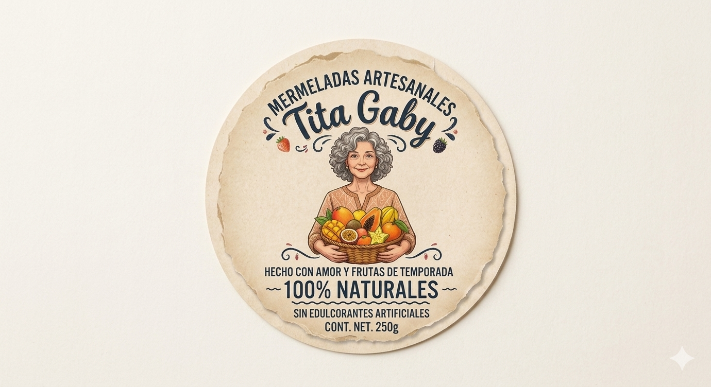
"Fruta tropical de temporada en cada cucharada"
Mermeladas Artesanales Tita Gaby es un proyecto dedicado a preservar y compartir el legado gastronómico familiar. Elaboramos productos únicos a partir de las recetas secretas de la abuela, fusionando la tradición heredada de generación en generación con el sabor auténtico de la fruta natural.
Fundado en 2020 como una iniciativa universitaria, Mermeladas Artesanales Tita Gaby es hoy un emprendimiento dedicado a la conservación del sabor natural, utilizando las recetas heredadas de la abuela para garantizar un producto auténtico y familiar.
Ofrecer mermeladas artesanales de la más alta calidad, elaboradas con frutas 100% naturales cosechadas en nuestra propia tierra y libres de edulcorantes artificiales, brindando a nuestros clientes un sabor lleno de tradición.
Consolidarnos como una empresa modelo en la producción sostenible de conservas naturales, siendo la primera opción para los consumidores que buscan un estilo de vida saludable y sin aditivos artificiales.
• Tradición familiar: Preservamos el legado culinario de la abuela.
• Autenticidad: Frutas 100% reales de nuestra tierra, sin químicos.
• Sostenibilidad: Respetamos el ciclo natural de la tierra.
• Calidad artesanal: Minuciosa selección en el campo y cuidado en el envasado.
• Bienestar: Opciones alimenticias que nutran a las familias de forma exquisita.
Mermeladas de frutas tropicales de temporada, elaboradas con amor.
Frutas frescas y naturales utilizadas en nuestras recetas de temporada:
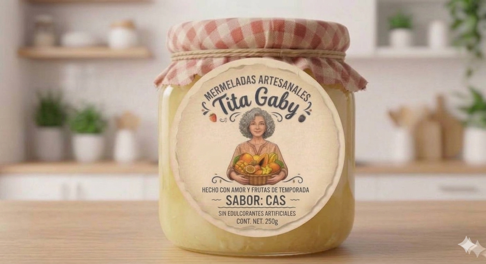
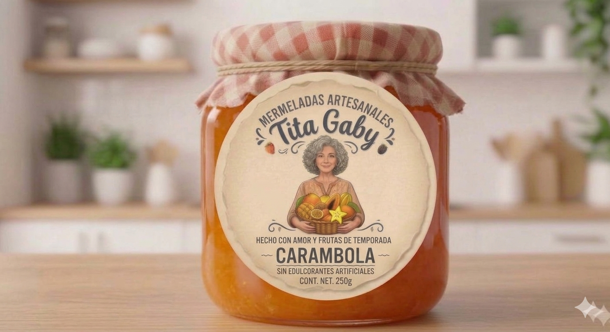
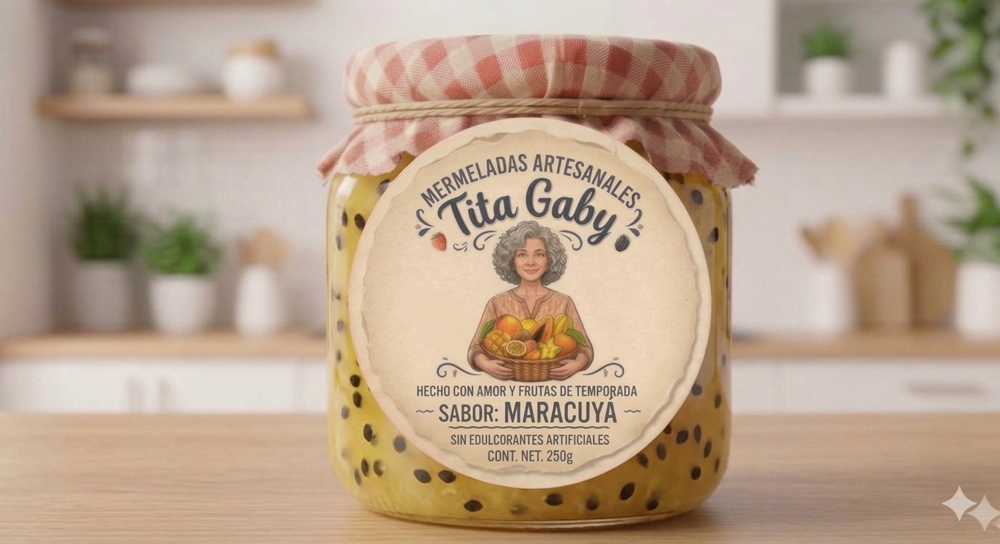

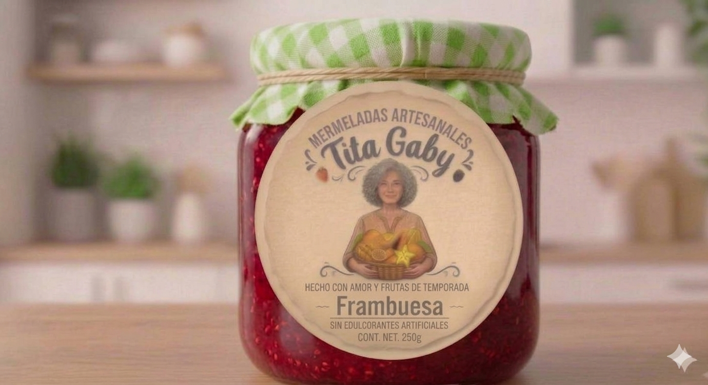
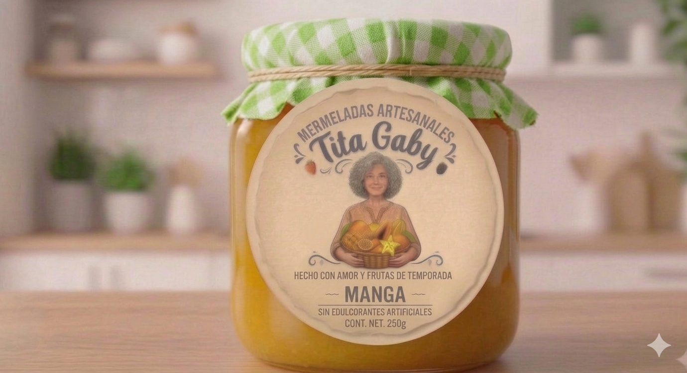
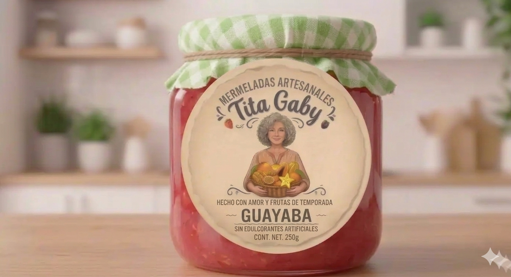
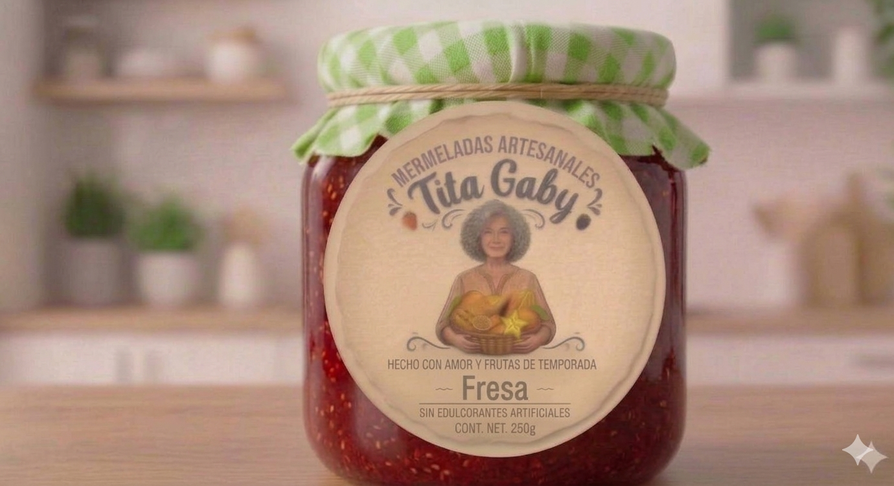
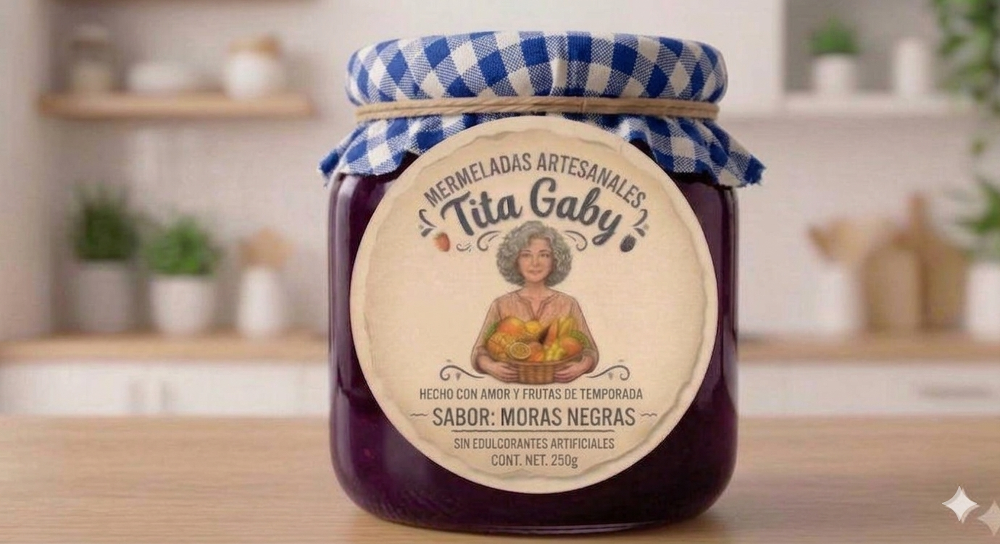
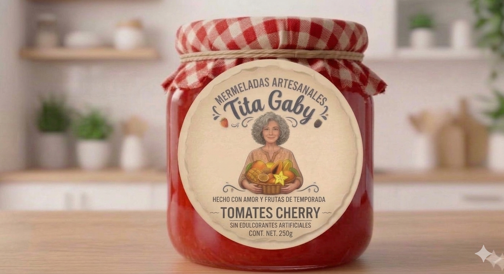
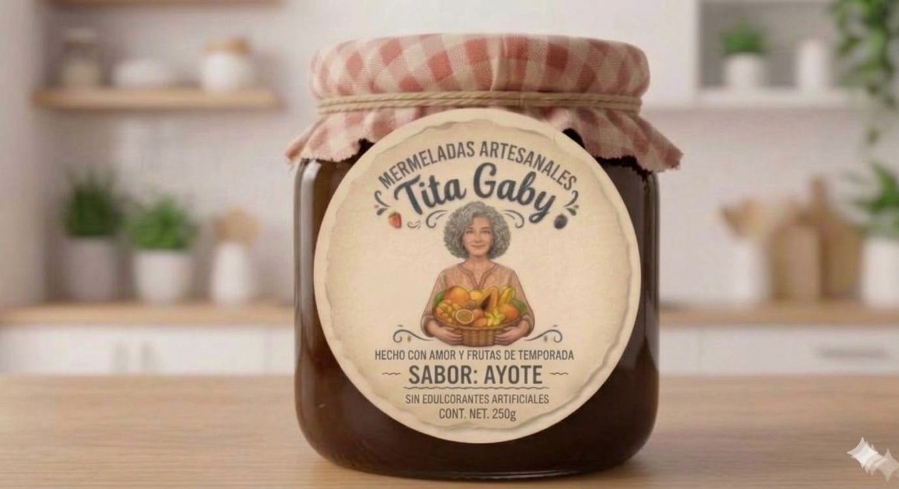
Atendemos de forma directa al consumidor final de manera digital. Gestionamos tus pedidos de manera ágil y totalmente personalizada a través de nuestras plataformas oficiales.
Toda tu navegación en este sitio web está protegida bajo un sistema de seguridad digital con certificado de navegación cifrada y protocolo web de datos seguro.
Métodos de pago autorizados y seguros: Transferencia por SINPE Móvil y Dinero en Efectivo de forma presencial.
Contacto de WhatsApp: 61545499
Enlace de Facebook:
Número Telefónico Central: 61545499
Correo Electrónico: mermeladastitagaby@gmail.com
Ubicación Oficial: Puntarenas, Puntarenas, Costa Rica
Copyright, 2026, Mermeladas Artesanales Tita Gaby, Todos los derechos reservados
Mermeladas Artesanales Tita Gaby Tel: 61545499